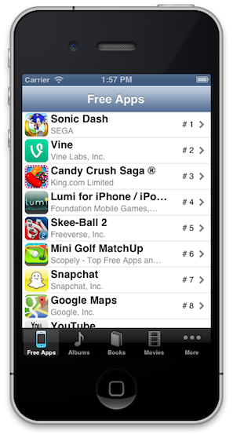
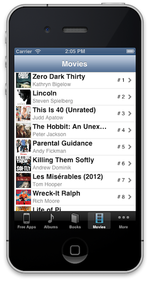
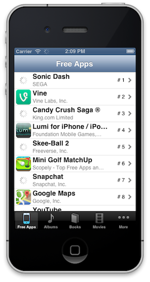
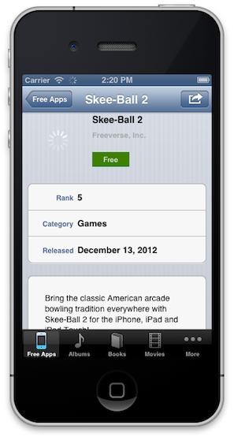
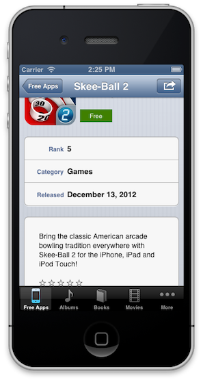
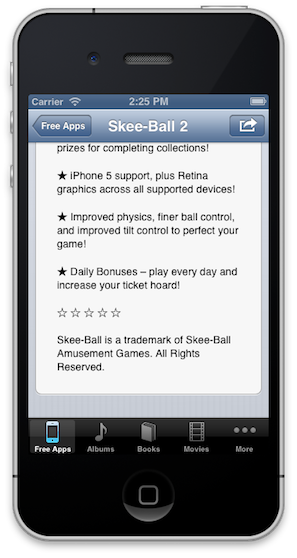
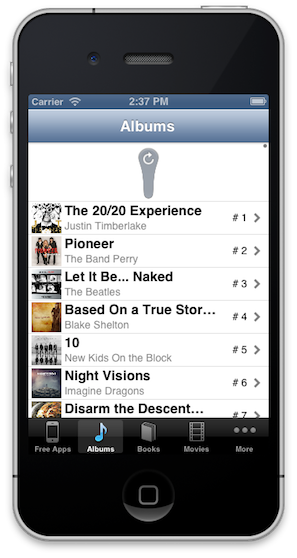
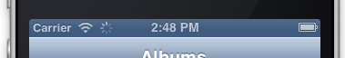

Friday, April 12, 2013 by 11:59pm
UIActivityIndicatorViewUITableViewControllerIn this project, you will enhance your previous ChartToppers Project by making it more “App Store Ready”. The primary focus of this project is to move all of the network activity to a background thread. In addition, there are some user interface enhancements which are all done in an effort to make the user experience more polished.
This project assumes that you have a working Project 3. While you will primarily be evaluated on the new aspects that are introduced in this project, a non-functioning or semi-functioning Project 3 may be problematic. If you do not have a functional Project 3, you will need to see me.
Before starting this project, you MUST copy your entire Project 3 into a new
project_4 directory. You will be working with this copy and will not make
any modifications to your original project.
All requests for network resources must be preceded by the following line of code:
[NSThread sleepForTimeInterval:drand48() * 3.0];
Failure to include this line will be an indication that you do not know when your app is actually accessing the network, and when it is working with local resources.
In any further discussion of network activity in this project description, assume that this line, along with the line following it, which is actually accessing the network, are both considered network activity.
This line would never be included in a released app, but for your project it is required. It will actually make the project easier to test and debug because it is forcing the network to have some perceived latency. This way you will really know if your activities are happening on the main thread or a background thread.
All network activity, inclusive of the forced delay, must be performed on a background thread using Grand Central Dispatch (GCD). Your main thread will not block as it did in the previous project.
This means that your app will launch immediately, and display the results once it has
loaded them. The results will be displayed in a UITableView as was done previously,
but now they will also include the artwork for the media item in the row. The
artwork will be loaded asynchronously as well, meaning that initially it will be missing,
and once it is loaded, it will appear.
If you would like to use a concurrent queue instead of a serial queue for the image loading you are encouraged, but not required to do so.
The asynchronous operations will appear in the controllers, and not the models. This means
that your models/helpers–ITunesFetcher and ITunesMediaItem–will continue to offer blocking
calls. It will be your controller that will dispatch the blocking calls to a
background queue.
There are at least three obvious places where this will happen–two places in the
ITunesMediaItemsTableVieController and one in the ITunesMediaItemDetailViewController.
(HINT: What happens when you tap an item that has not loaded the image yet?)
I would encourage you to clean up your view controllers that extend the ITunesMediaItemsTableViewController
so that there is as little duplication as possible. Ideally, the dispatching to a background
thread would happen in the super class, and not in each sub class.
The following changes will be made to the user interface.
When you are listing the ITunesMediaItems, you will now include the artwork associated
with each item. In the case that the artwork is not available, you can decide how to handle
the behavior.
I would encourage you to really consider what contentMode will work best for images at
such a small size. You will see in the following two examples which I felt was most
appropriate. You might find the option to clip subviews helpful in Xcode.
 
When updating the images in the cells, you will want to use the UITableView method
cellForRowAtIndexPath: otherwise, you might get surprising results.
NOTE: You will only load images as needed and not preload all of the images. This means that as you scroll through the list, only when a row is displayed will the image be fetched.
NOTE: You will hopefully realize that it is very possible that there could be multiple requests
for the artwork image from the model. While it is not required, you could consider using
a @synchronized call here.
While your app is waiting for images to load, a UIActivityIndicatorView will be shown.
Once the image has loaded, the UIActivityIndicatorView will disappear.
 
In the detail view, you will now display the summary information about the ITunesMediaItem.
This will mean that if you have not already extracted this information from the initial JSON
payload, you will need to adjust your model to track the summary.
The difficulty with displaying this data is that the size of the cell and UITextView will need
to change depending on the amount of text needed to display. In order to solve this, I encourage
you to investigate the contentSize property on the UITextView as well as the UITableViewDelegate
method tableView:heightForRowAtIndexPath:.
 
NOTE: I did notice that some items do not have descriptions. You can decide what to do in those cases.
In addition, I also noticed that some of the items have embedded HTML. For this project, it is
fine to just display the HTML as plain text (as is). If you want to experiment with a UIWebView,
you can.
Your ITunesMediaItemsTableViewController will support the pull-to-refresh behavior. This means
that upon after the list has been refreshed, the images will also need to be refreshed. If you
need help on how to implement this, consult Lecture 11.

All access to the network, inclusive of our forced delay, must be indicated via the network activity indicator.

As we have discussed, the API for this is too simple, which leads to some potential complications. You will need to write a helper class that knows how and when to display and hide the network activity indicator. This class should implement the Singleton Design Pattern.
This means that all network calls must be surrounded by a call to your utility class to start/stop the monitor.
The public interface to my class is as follows:
#import <Foundation/Foundation.h>
@interface NetworkActivityTracker : NSObject
+ (NetworkActivityTracker *)sharedInstance;
- (void)showActivityIndicator;
- (void)hideActivityIndicator;
@end
The Singleton Design pattern can be implemented as follows:
+ (NetworkActivityTracker *)sharedInstance
{
static NetworkActivityTracker *sharedInstance;
static dispatch_once_t onceToken;
dispatch_once(&onceToken, ^{
sharedInstance = [[NetworkActivityTracker alloc] init];
});
return sharedInstance;
}
You must include an app icon for this project. The icon must be provided for both retina and non-retina iPhones (57x57 and 114x114).
In addition, your tab bar must have icons for each tab, and each icon must have a retina and non-retina version. This means that if you have an icon of size 35x35 called apps.png, you will also have a higher resolution version of the same icon at the size 70x70 called apps@2x.png.
Do your best to make your app look nice. Consider trying to make it look unique (while still meeting all of the requirements).
By the due date/time you are expected to have committed your working Xcode
project to your private github repository for CSCI 567 at the location
/project_4/ChartToppers. As always, this project is to be done individually.